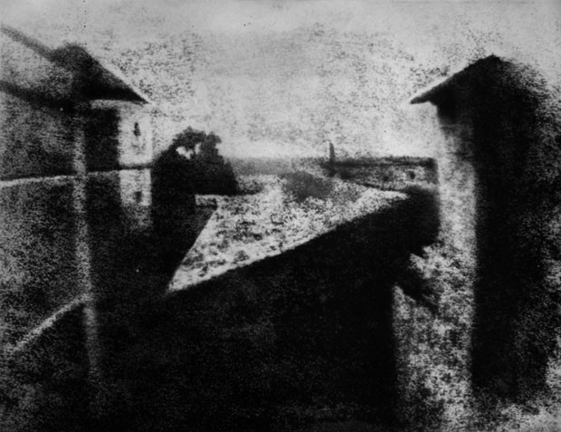
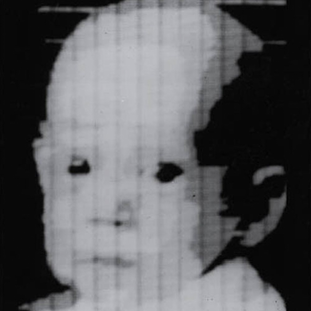
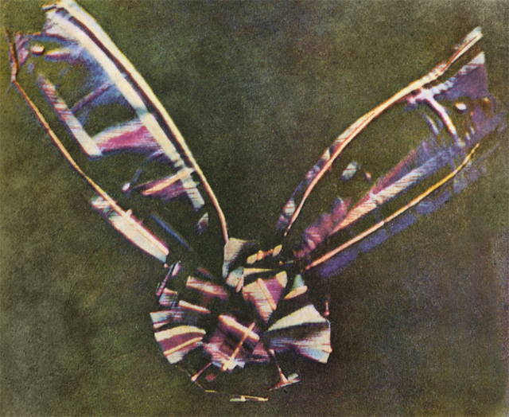

A primeira fotografia
A Primeira fotografia do mundo feita em uma câmera foi tirada em 1826 por Joseph Nicéphore Niépce. A fotografia foi tirada a partir da janelas de Niépce, na região de Borgonha, França. Esta imagem foi capturada através de um processo conhecido como heliografia, que utilizava de betume. Ele precisou de 8 horas de exposição à luz de uma placa de estanho, coberta com betume da Judeia e instalada no fundo de uma câmera escura.
A primeira foto digital
A primeira fotografia digital foi tirada por volta de 1957; quase 20 anos antes de um engenheiro da Kodak inventar a primeira câmera digital. A foto é uma varredura digital de uma foto inicialmente feita em filme. A imagem retrata o filho de Russell Kirsch e tem uma resolução de 176 × 176 – uma fotografia quadrada digna de qualquer perfil de Instagram.
A primeira foto colorida
A primeira paisagem colorida para mostrar o mundo em cores foi feita em 1877. O fotógrafo, Louis Ducos du Hauron Arthur, foi um pioneiro na fotografia a cores e foi o cérebro por trás do processo que criou esta foto. O clique mostra o sul da França e é apropriadamente intitulado “Paisagem do sul da França”.